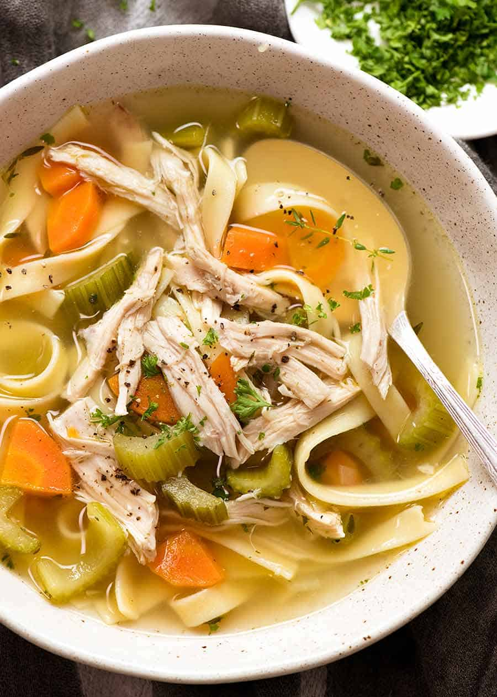

Back to Home
Shrimp and Mushroom Alfredo Pasta

When we get too much chicken from Costco...
Ingredients
- 1 Tbsp Butter
- 1/2 cup chopped onion
- 1/2 cup chopped celery
- 1 cup sliced carrots
- 4 cans of chicken broth
- 1 can of vegetable broth
- 1/2 lb cooked chicken breast
- 1.5 cup egg noodles
- 1/2 tsp dried basil
- 1/2 tsp dried oregano
- S&P
Instructions
- Melt butter in a large pot over medium heat. Add onion and celery and cook until just tender, about 5 minutes.
- Add chicken broth, vegetable broth, chicken, egg noodles, carrots, basil, oregano, salt, and pepper. Stir to combine and bring to a boil.
- Reduce heat and simmer for 20 minutes.
- Enjoy!